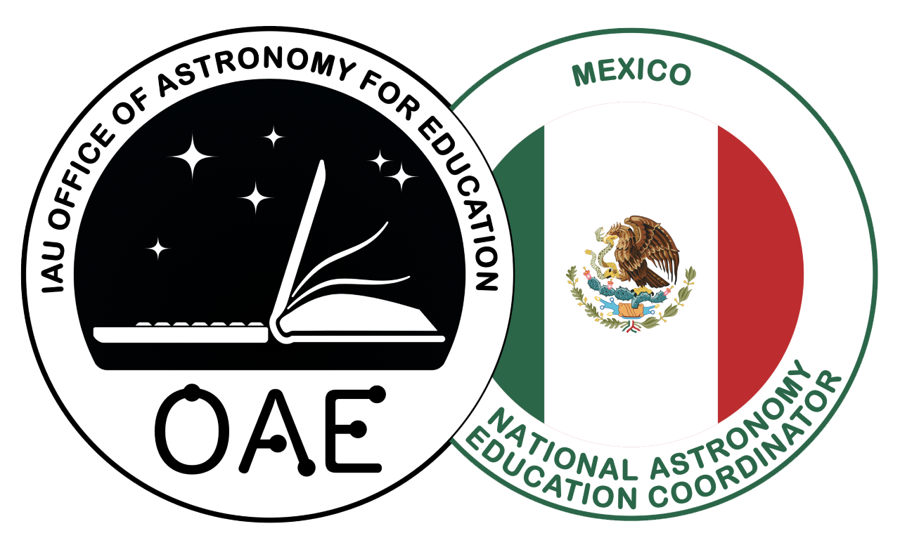
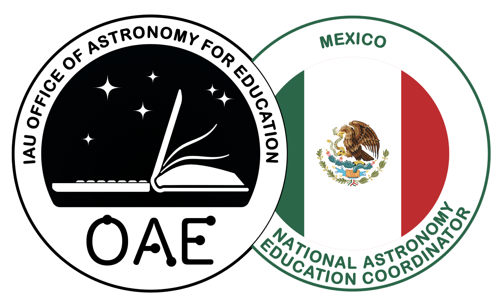
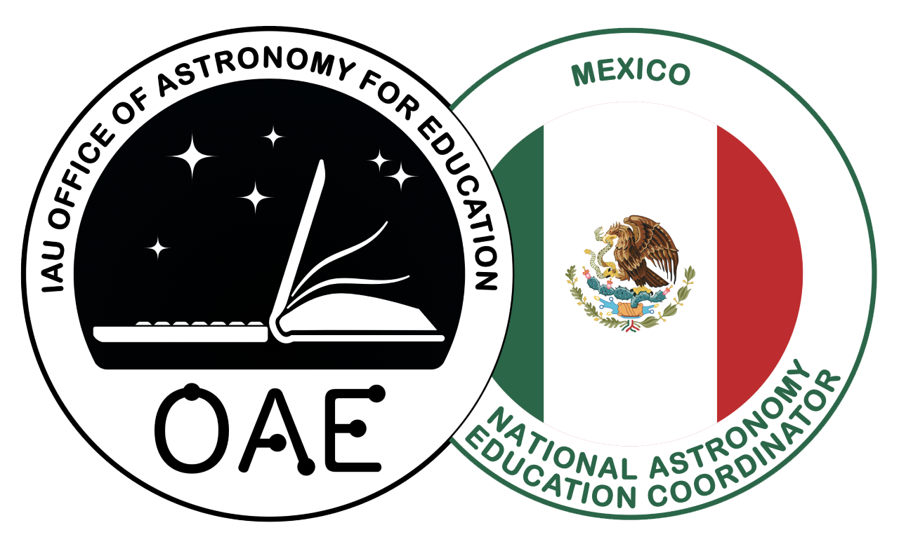
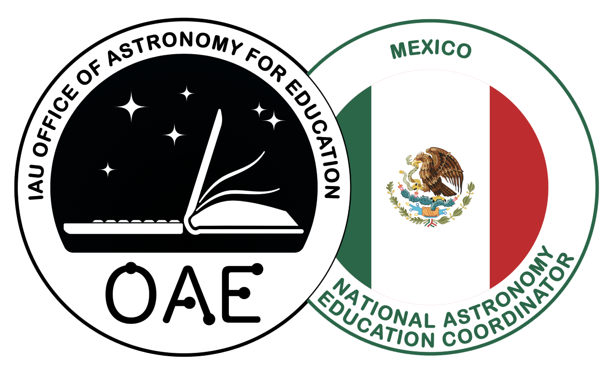

Los Asteroides en la cultura popular
 



Los asteroides han influido en la cultura popular de diversas maneras debido a su fascinante mezcla de misterio y peligro pues representa una amenaza potencial para la Tierra, es por esto que los medios y la divulgación científica han destacado la importancia de monitorear y estudiar los asteroides.
Los asteroides han influido en la cultura popular debido a su capacidad para mezclar elementos de ciencia, aventura y peligro en el espacio. Estos han sido una fuente de inspiración para películas, literatura, videojuegos y divulgación científica, y su presencia en la cultura popular ha contribuido a una mayor conciencia pública sobre estos objetos celestiales y su impacto potencial en la Tierra. Es por esto que hablaremos sobre aquellas obras que han contribuido a poner a los asteroides en nuestra cultura.
Muchos libros han influido en la percepción pública de los asteroides, ya sea al explorar sus amenazas potenciales, sus posibilidades como fuente de recursos, o al presentar escenarios interesantes en mundos extraterrestres. Han contribuido a enriquecer la literatura sobre el tema de los asteroides y la exploración espacial.
"Le Petit Prince" (El principito) por Antoine de Saint-Exupéry: Los asteroides tienen una breve pero significativa aparición en la obra, en ella, el Principito visita varios asteroides, cada uno de los cuales representa una crítica o comentario sobre la sociedad y la naturaleza humana. Uno de los asteroides que visita se llama "B-612", que es el asteroide de origen del Principito. El hecho de que el Principito provenga de un asteroide le da un sentido de distanciamiento y extrañeza con respecto a la Tierra y sus habitantes, lo que le permite ver el mundo desde una perspectiva única.
"The Hammer of God" (El Martillo de Dios) por Arthur C. Clarke (1993): Esta novela de Clarke presenta un escenario en el que la humanidad debe enfrentarse a un asteroide gigante que se dirige hacia la Tierra. La historia explora los esfuerzos para desviar el asteroide y los desafíos técnicos y éticos asociados con esta tarea.
"Lucifer's Hammer" por Larry Niven y Jerry Pournelle (1977): Esta novela postapocalíptica se centra en el impacto de un gran asteroide en la Tierra y sus consecuencias catastróficas. La historia sigue a varios grupos de supervivientes mientras luchan por sobrevivir en un mundo transformado.
"The Martian" (El Marciano) por Andy Weir (2011): Aunque no se trata de un asteroide, esta novela se desarrolla en Marte, un planeta rocoso similar a los asteroides en muchos aspectos. Sigue la historia de un astronauta varado en Marte y sus esfuerzos por sobrevivir y ser rescatado.
"Mining the Sky" (Minando el cielo) por John S. Lewis (1996): Este libro de divulgación científica explora la idea de la minería de asteroides como una fuente potencial de recursos para la humanidad en el futuro. Ofrece una visión detallada de la ciencia y la tecnología detrás de la explotación de asteroides. "The Sky Is Not the Limit: Adventures of an Urban Astrophysicist" (El cielo no es el límite: Aventuras de un astrofísico urbano) por Neil deGrasse Tyson (2000): En este libro de no ficción, Neil deGrasse Tyson aborda varios temas astronómicos, incluyendo asteroides, y comparte sus experiencias en la divulgación científica.
Numerosas películas han recibido influencia de los asteroides como tema central o como parte importante de la trama.
Algunas de las películas más conocidas que involucran asteroides incluyen:
Armageddon (1998): Esta película dirigida por Michael Bay es quizás una de las películas más emblemáticas sobre asteroides. Presenta un escenario en el que un asteroide del tamaño de Texas se dirige hacia la Tierra y un equipo de perforadores de petróleo es reclutado para viajar al espacio y perforar el asteroide antes de que impacte en la Tierra.
Deep Impact (1998): Lanzada el mismo año que "Armageddon," esta película dirigida por Mimi Leder también se centra en la amenaza de un asteroide. Aborda el impacto emocional y social que tendría un evento de este tipo en la Tierra, además de los esfuerzos para evitarlo.
Meteor (1979): En esta película, un asteroide y un cohete nuclear son lanzados desde la Tierra para evitar una colisión con otro asteroide que se acerca. Es una de las primeras películas en explorar el tema de la deflexión de asteroides mediante explosiones nucleares.
Impacto profundo (1998): Esta película para la televisión, no debe confundirse con "Deep Impact," trata sobre un astrónomo amateur que descubre un asteroide que se acerca a la Tierra. La película sigue sus esfuerzos para advertir a las autoridades y evitar el desastre.
The Day the Earth Caught Fire (1961): Aunque no se trata de un asteroide, esta película británica aborda el impacto de las pruebas nucleares en el clima de la Tierra y la posibilidad de que la Tierra colisione con Venus debido a cambios en su órbita. Ofrece una perspectiva única sobre las amenazas cósmicas.
Estas películas han contribuido significativamente a la popularización de la idea de que los asteroides pueden representar una amenaza para la Tierra y han generado interés en el tema de la defensa planetaria. Aunque algunas de ellas pueden no ser completamente precisas desde el punto de vista científico, han desempeñado un papel importante en la cultura popular en relación con los asteroides y el espacio exterior.
A diferencia de las películas, libros y otros medios, las canciones que reciben influencia directa de los asteroides son menos comunes, pero aún así, hay algunas canciones que han sido inspiradas por estos objetos celestiales o que hacen referencia a ellos de manera simbólica. Dentro de las cuales tenemos:
"Starman" por David Bowie: Aunque no se centra específicamente en asteroides, esta canción icónica de David Bowie habla de la llegada de un "hombre estelar" a la Tierra desde el espacio. La canción captura un sentido de exploración y conexión con el cosmos.
"Asteroids" por Ozma: Esta banda de rock alternativo tiene una canción llamada "Asteroids" en su álbum "Rock and Roll Part Three" (2001). La canción utiliza asteroides como metáfora para explorar temas de distancia y separación en una relación.
"Asteroid Blues" por The Seatbelts: Esta es la canción de apertura del anime "Cowboy Bebop" y utiliza el término "Asteroid Blues" como título. Aunque la letra es en japonés y no se centra en asteroides, la serie en su conjunto explora la vida en el espacio y la aventura en un futuro distante.
"Asteroids Collide" por Innerpartysystem: Esta canción de la banda de música electrónica Innerpartysystem se centra en la idea de asteroides chocando y explotando en el espacio, lo que sirve como una metáfora de conflictos y rupturas en las relaciones humanas.
"Asteroid Blues" por Mark Knopfler: Esta canción del álbum "Golden Heart" (1996) de Mark Knopfler utiliza asteroides como una metáfora para la soledad y la búsqueda de significado en el universo.
Estas canciones utilizan la idea de los asteroides de diversas maneras, ya sea como metáfora para explorar temas emocionales o como parte de una narrativa de ciencia ficción. Mientras que las canciones sobre asteroides pueden no ser tan comunes como otros temas en la música popular, demuestran cómo los objetos celestiales pueden inspirar la creatividad artística en diferentes formas.
Los asteroides y temas relacionados con el espacio exterior han sido una fuente de inspiración para varios videojuegos a lo largo de los años.
Asteroids (1979): Este es uno de los juegos más icónicos relacionados con asteroides. En "Asteroids", los jugadores controlan una nave espacial que debe destruir asteroides y naves enemigas mientras evitan colisiones. Es un clásico de la era arcade y ha influido en muchos otros juegos.
Gravitar (1982): Desarrollado por Atari, "Gravitar" es otro juego de arcade que se centra en la exploración de asteroides y la lucha contra la gravedad para aterrizar en ellos. Los jugadores deben destruir la base enemiga y recoger valiosos cristales.
Space Engineers (2013): En este juego de construcción y supervivencia espacial, los jugadores pueden crear naves espaciales y estaciones en asteroides. Los asteroides se utilizan como fuentes de recursos y lugares para establecer bases.
EVE Online (2003): Este MMORPG de ciencia ficción tiene un vasto universo en el que los jugadores pueden explorar asteroides para extraer recursos, que luego se pueden utilizar en la construcción de naves y objetos.
Deep Rock Galactic (2018): En este juego cooperativo de disparos en primera persona, los jugadores asumen el papel de enanos espaciales que exploran asteroides y cavernas subterráneas en busca de recursos valiosos mientras luchan contra criaturas alienígenas.
Starbound (2016): Este juego de exploración y construcción en 2D permite a los jugadores explorar asteroides y planetas, recoger recursos y construir sus propias bases espaciales.
Estos son solo algunos ejemplos de videojuegos que han utilizado asteroides y la exploración espacial como parte de su mecánica de juego o como parte de la narrativa. Los asteroides a menudo proporcionan un entorno interesante y desafiante para los jugadores, ya que pueden contener valiosos recursos o ser obstáculos peligrosos en su camino a través del espacio.